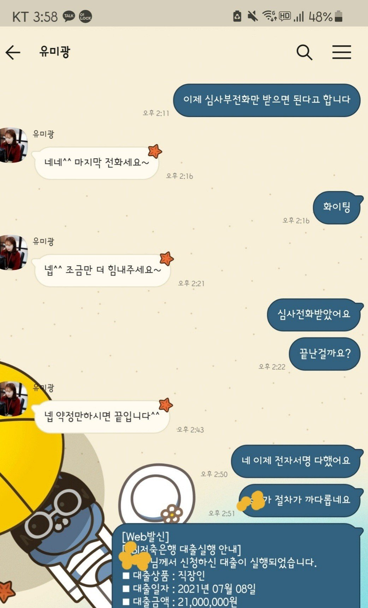

[직장인대출] 유미광과장님 감사합니다
이미 7400만원 기대출이 있고 소액이 필요했지만 기대출이 많아서 어쩔까 고민중에 7월 금리가 내려갔다고 알려주셔서 용기내어보았습니다
일단 기대출 금리를 낮추기위해 대환요청을 했는데 여유자금까지 확보해서 너무 감사합니다
항상 긍정적으로 알아봐주시고 도와주셔서 감사합니다
기대출 7400 (3건/저축은행)/ 4대보험 10년이상재직 / 신용등급 660점 / 연봉 4300
신용점수가 낮아서 금리는 낮추지못했지만 그리도 300정도 필요했는데 2100만원 승인되어서 바로 받았습니다
항상 열심히 알아봐주시고 용기낼수있데 도와주시고 감사합니다
연체없이 잘 관리해서 금리를 낮춰보겠습니다
